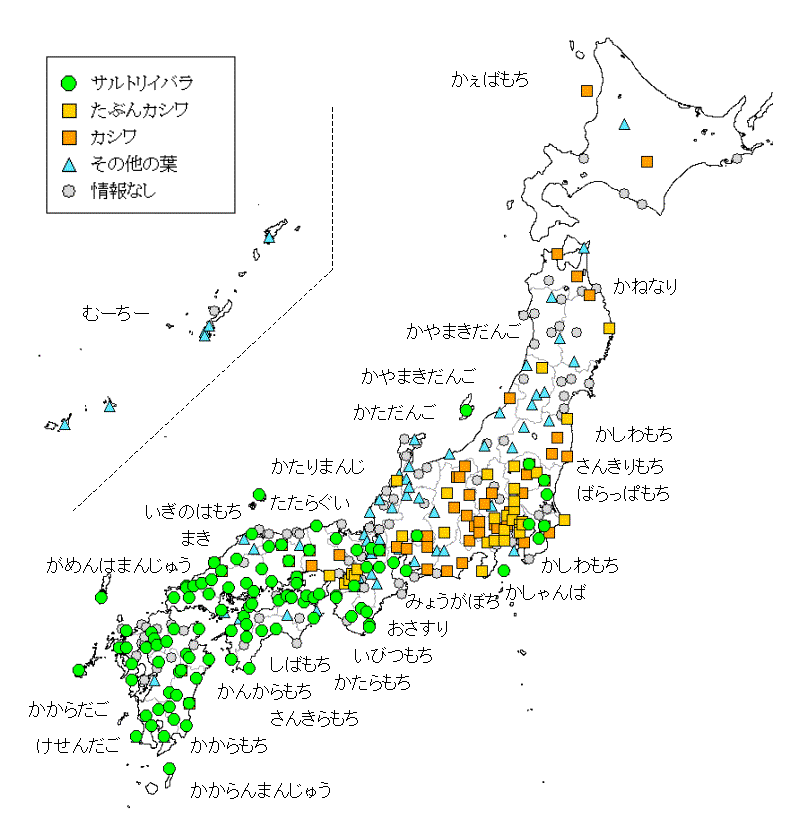

サルトリイバラ
1 さんくす Pl@ntNet
2 調べて びっくり
名前が分かってから、いろいろ調べてみました。 びっくりしたのは：
サルトリイバラが「かしわ餅の葉」だった
備後 で生まれて18歳で上京し、以来55年間、関東地方の「かしわ餅」が自分の持つかしわ餅のイメージとずれていることになんとなく違和感を感じていましたが、 今回、散歩の途中で偶然「本当の」かしわ餅の葉を見かけるまでは、 気にはなっていたけれど深く追求するということはありませんでした。
関東地方では、かしわ餅を包む葉は文字通り カシワの葉 Quercus dentata です。 一方、関西・中国・四国・九州、関東地方の一部、もちろん備後地方でも、サルトリイバラの葉を2枚つかって餅をはさみ込みます(図3)。これがかしわ餅のマイイメージです:smile: （注2）
図3: サルトリイバラの柏餅
服部他(2007)によると、全国的にはサルトリイバラが主流派で、カシワの葉はマイノリティのようですし、「柏餅の原型はサルトリイバラ利用のもの」とも述べています。また 室井・清水(1985）によれば「代用品の名から生まれた柏餅 –本来の葉はサルトリイバラ」だそうです（「広島の植物ノート 特集－Ⅳ かしわ餅のまとめ」の引用による）。 この「広島の植物ノート」にはかしわ餅に関する知見がぎっしり詰まっています。 一読をおすすめします。特に下の図4 はすばらしいです！

図4: かしわ餅に使用する葉と餅の名称の分布（出典：広島の植物ノート）
かしわ餅の呼び名や調理方法、使用する葉などの地方による違いに関しては、この他にも文献やネット記事がたくさんあります。くわしくは文献（たとえば「レファレンス事例詳細」など）をご覧ください。
3 サルトリイバラの思い出
散歩中に偶然見かけたサルトリイバラが「かしわ餅の葉」であったことをきっかけに、60年以上も昔の父との思い出が蘇ってきました。わたしがまだ小学校の低学年だったころ・・・
母から「かしわ餅を作るからかしわの葉を取ってきて」と頼まれた父は、 わたしをバイクの燃料タンクの上にまたがせて出かけました。
かしわ餅は5月の節句の縁起物だったので、葉の採集はほぼ毎年の恒例行事だったと思います。 そんな中でなぜか現場の地形とその時の父の様子などを とてもはっきりと映像として記憶しているシーンがあります。狭くくねった道の片側が山の斜面、反対側は川という風景。
そこでバイクを止めた父は「ここで待ってて」と私を残して、茂ったヤブになっている斜面を這い上がって行き、体が見えたり隠れたりする感じのブッシュの中で、子供心にはとても高い木に巻き付いているツルと葉をバリバリを剥がして集めて袋に詰め込んで降りてきました。
この鮮明な映像記憶は時々ふと脳裏に浮かぶことはありましたが、(1) かしわの葉がどんな植物なのか、(2) その場所はどこなのかについて つきつめて考えることはありませんでした。
散歩の途中できれいな緑の実をつけた植物＝サルトリイバラを見かけたおかげで、(1)は解決しました。
(2)については、地形・風景の映像記憶を元にGoogle Earthで探索してみました。 その結果、そのおよその位置を特定することができました。画像を見ると今でも父がよじ登った河岸の林は残っているように見えます。コロナの災禍がおさまったらもう一度訪ねて確認してみたいと思っています。
4 文献・資料
- 室井綽・清水美穂子 (1985). 室井ひろしの自然百科, 地人書館
- 広島の植物ノート 特集 - IV かしわ餅のまとめ
- 服部保・南山典子・澤田佳宏・黒田有寿茂 (2007). かしわもちとちまきを包む植物に関する植生学的研究, 人と自然, 17, 1-11.
- レファレンス事例詳細(Detail of reference example)